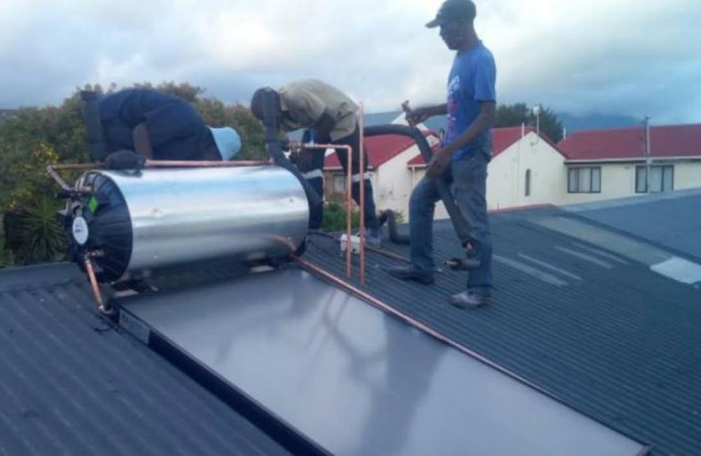

Cape Town's plumber you can actually rely on.
Leaking tap or burst geyser, blocked drain or brand-new bathroom, TGA Plumbers sorts it fast and fixes it properly. Serving Cape Town all the way to Somerset West.

Every plumbing service, under one roof
If it carries water, gas or waste, we fix it, install it or replace it. Houses, complexes, shops and factories.
No call-out fee. Ever.
We come, we diagnose, we quote. You only pay for the work you approve.
How it works
From first call to fixed, with no surprises on the bill.
Call or message
Phone, WhatsApp or use our AI plumber to describe what's wrong.
We arrive
A qualified plumber comes to you. No call-out fee.
Clear quote
Itemised price up front. Nothing starts without your yes.
Fixed and certified
Neat work, guaranteed, with a Certificate of Compliance where needed.
Plumbing questions, answered
Straight answers from your Cape Town plumbers.
Do you charge a call-out fee?
No. TGA Plumbers charges no call-out fee. We assess the job, give you a clear quote and you only pay for work you approve.
How much is a plumbing Certificate of Compliance?
A plumbing CoC from TGA Plumbers costs R1,000.
How much does leak detection cost?
Leak detection with TGA Plumbers is R1,800.
How much does an electric geyser installation cost in Cape Town?
Our electric geyser packages start at R8,500 for 100 litres, R9,500 for 150 litres and R12,500 for 200 litres. Final pricing is confirmed after assessing your home.
Which areas do you serve?
We serve Cape Town and the Western Cape from the City Bowl and Atlantic Seaboard through the Southern and Northern Suburbs, Cape Flats and Mitchells Plain to Strand, Gordon's Bay and Somerset West.
Do you offer emergency plumbing?
Yes. TGA Plumbers offers 24-hour emergency call-outs for burst pipes, geyser bursts and sewer overflows. Call 069 040 9017.
Plumber near you, Cape Town to Somerset West
Looking for a plumber in your suburb? We cover the City Bowl, Atlantic Seaboard, Southern Suburbs, Northern Suburbs, Cape Flats, Helderberg and the Strand. Tap your area to request a quote.
- Plumber in Cape Town CBD
- Plumber in Gardens
- Plumber in Tamboerskloof
- Plumber in Oranjezicht
- Plumber in Vredehoek
- Plumber in Woodstock
- Plumber in Salt River
- Plumber in Observatory
- Plumber in Green Point
- Plumber in Sea Point
- Plumber in Bantry Bay
- Plumber in Clifton
- Plumber in Camps Bay
- Plumber in Llandudno
- Plumber in Hout Bay
- Plumber in Mowbray
- Plumber in Rosebank
- Plumber in Rondebosch
- Plumber in Newlands
- Plumber in Claremont
- Plumber in Kenilworth
- Plumber in Wynberg
- Plumber in Plumstead
- Plumber in Diep River
- Plumber in Bergvliet
- Plumber in Meadowridge
- Plumber in Constantia
- Plumber in Tokai
- Plumber in Steenberg
- Plumber in Lakeside
- Plumber in Muizenberg
- Plumber in Kalk Bay
- Plumber in Fish Hoek
- Plumber in Simon's Town
- Plumber in Noordhoek
- Plumber in Kommetjie
- Plumber in Ottery
- Plumber in Grassy Park
- Plumber in Lotus River
- Plumber in Retreat
- Plumber in Strandfontein
- Plumber in Pelican Park
- Plumber in Wetton
- Plumber in Lansdowne
- Plumber in Athlone
- Plumber in Gatesville
- Plumber in Rylands
- Plumber in Crawford
- Plumber in Pinelands
- Plumber in Thornton
- Plumber in Maitland
- Plumber in Epping
- Plumber in Goodwood
- Plumber in Parow
- Plumber in Bellville
- Plumber in Bellville South
- Plumber in Belhar
- Plumber in Bishop Lavis
- Plumber in Elsies River
- Plumber in Ravensmead
- Plumber in Bonteheuwel
- Plumber in Delft
- Plumber in Durbanville
- Plumber in Bothasig
- Plumber in Edgemead
- Plumber in Monte Vista
- Plumber in Plattekloof
- Plumber in Panorama
- Plumber in Welgemoed
- Plumber in Tygervalley
- Plumber in Century City
- Plumber in Milnerton
- Plumber in Table View
- Plumber in Bloubergstrand
- Plumber in Melkbosstrand
- Plumber in Parklands
- Plumber in Sunningdale
- Plumber in Brackenfell
- Plumber in Kraaifontein
- Plumber in Scottsdene
- Plumber in Kuils River
- Plumber in Kleinvlei
- Plumber in Eerste River
- Plumber in Blackheath
- Plumber in Blue Downs
- Plumber in Mfuleni
- Plumber in Mitchells Plain
- Plumber in Khayelitsha
- Plumber in Philippi
- Plumber in Gugulethu
- Plumber in Nyanga
- Plumber in Langa
- Plumber in Macassar
- Plumber in Strand
- Plumber in Gordon's Bay
- Plumber in Somerset West
- Plumber in Firgrove
- Plumber in Sir Lowry's Pass
Get a free quote today
No call-out fee, no obligation. Tell us what's happening and we'll come back fast.
069 040 9017